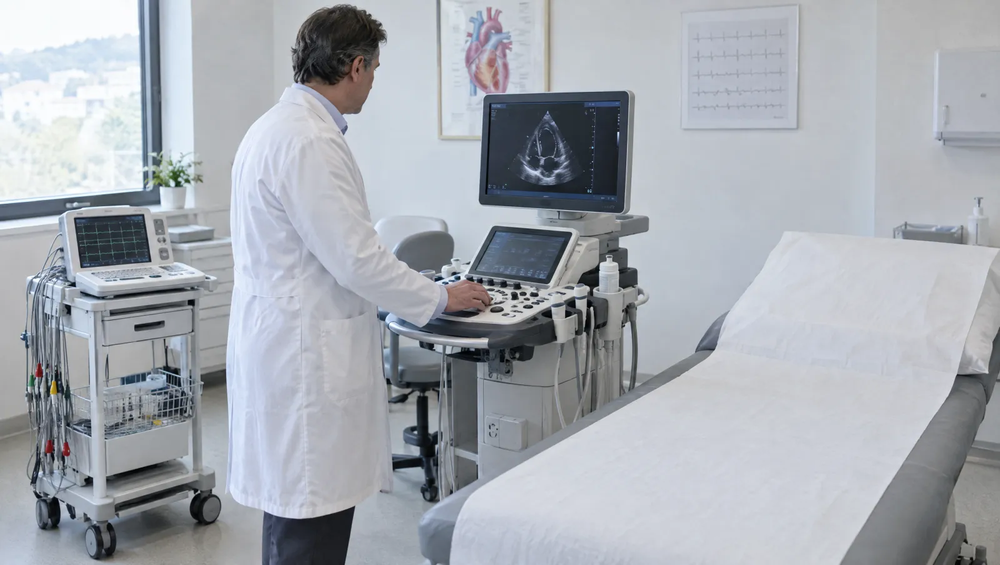

Kardiyoloji polikliniğinde neler yapılır?
Kardiyolojiye çoğu zaman bir şikâyetle gelinir: merdiven çıkarken göğüste baskı, gece fark edilen çarpıntı, eskisi kadar yürüyememek. Bazen de hiçbir şikâyet yokken bir check-up sonucu ya da yüksek ölçülen tansiyon kapıyı çaldırır.
Görüşmede aile öyküsü, kullandığınız ilaçlar ve şikâyetin hangi durumda başladığı konuşulur. Ardından muayene ve EKG gelir. Gerekirse ekokardiyografi ya da efor testi planlanır. Tedavi başladıktan sonra kontrollerin hangi aralıkla yapılacağını hekiminizle birlikte belirlersiniz.

Hangi şikâyetlerde kardiyoloğa görünmelisiniz?
- Eforla gelen, dinlenince geçen göğüs ağrısı ya da baskı hissi
- Çarpıntı, kalbin tekleme ya da düzensiz atma hissi
- Yürürken ya da yatarken artan nefes darlığı
- Ayak bileklerinde akşamları belirginleşen şişlik
- Yüksek tansiyon ya da yüksek kolesterol takibi
- Ailede erken yaşta kalp hastalığı öyküsü
- Ameliyat öncesi kalp değerlendirmesi
Acil durum
Göğüs ağrısı 15 dakikadan uzun sürüyor, kola, çeneye ya da sırta yayılıyor; terleme, bulantı ya da nefes darlığı eşlik ediyorsa randevu beklemeyin. 112'yi arayın ya da en yakın acil servise başvurun.
Takip ettiğimiz kalp ve damar hastalıkları
- Yüksek tansiyon
- Koroner arter hastalığı
- Ritim bozuklukları
- Kalp yetmezliği
- Kalp kapak hastalıkları
- Yüksek kolesterol
- Çarpıntı
- Ameliyat öncesi değerlendirme
Kalbi değerlendiren tetkikler
| Tetkik ya da işlem | Açıklama | Süre | Hazırlık |
|---|---|---|---|
| EKG | Kalbin elektriksel aktivitesini kaydeder. Ritim bozukluğu ve bazı kalp krizi bulguları ilk bu testte görülür. | Yaklaşık 5 dakika | Hazırlık gerekmez |
| Ekokardiyografi | Ses dalgalarıyla kalbin odacıklarını, kapaklarını ve pompalama gücünü gösteren ultrason incelemesi. | 15-30 dakika | Hazırlık gerekmez |
| Efor testi | Koşu bandında kademeli yürüyüş sırasında EKG ve tansiyon izlenir; eforla ortaya çıkan sorunları gösterir. | 20-30 dakika | 2-3 saat açlık, rahat ayakkabı |
| Ritim Holter | Göğse takılan küçük bir cihaz kalp ritmini 24-48 saat boyunca kaydeder. Ara ara gelen çarpıntılar için kullanılır. | 24-48 saat taşınır | Takılmadan önce duş alın |
| Tansiyon Holter | Gün boyu belirli aralıklarla tansiyon ölçer. Muayenede yüksek, evde normal çıkan değerleri ayırt eder. | 24 saat taşınır | Günlük işlerinize devam edin |
| Kan tahlilleri | Kolesterol, şeker, böbrek fonksiyonları ve gerekirse kalp enzimleri laboratuvarımızda çalışılır. | Sonuç süresi teste göre değişir | Kolesterol için 10-12 saat açlık |
Kardiyoloji randevusuna gelirken
- Kullandığınız ilaçların listesini ya da kutularını getirin
- Varsa eski EKG, ekokardiyografi ve tahlil sonuçlarınızı yanınıza alın
- Evde tansiyon ölçüyorsanız son iki haftanın değerlerini not edin
- Çarpıntı yaşadığınız saatleri ve ne yaptığınızı yazın
Kardiyoloji hekimleri
Kalp tetkikleri hakkında sorulanlar
Efor testine aç mı gelmeliyim?
Testten 2-3 saat önce ağır yemek yemeyin; hafif bir kahvaltı yeterlidir. Rahat ayakkabı ve kıyafet giyin. Kalp ilaçlarınızın test günü kesilip kesilmeyeceğine hekiminiz karar verir, kendi kendinize bırakmayın.
Holter cihazı takılıyken duş alabilir miyim?
Hayır. Cihaz suya dayanıklı değildir, duşunuzu cihaz takılmadan önce alın.
Tansiyonum evde normal, muayenede yüksek çıkıyor. Bu ne anlama gelir?
Buna beyaz önlük etkisi denir. Gerçek değeri görmek için 24 saatlik tansiyon Holter takılabilir. Ev ölçümlerinizi de aynı kolla, aynı saatlerde yapıp kaydetmeniz değerlendirmeyi kolaylaştırır.
Tetkik sonuçlarımı nereden görebilirim?
Laboratuvar ve görüntüleme sonuçlarınız e-Nabız sistemine aktarılır. Sonuçları hekiminizle birlikte değerlendirmek için kontrol randevunuzu unutmayın.
- Gözden geçiren
- Uzm. Dr. Cenk Albayrak
- Son güncelleme
- 7 Ekim 2026